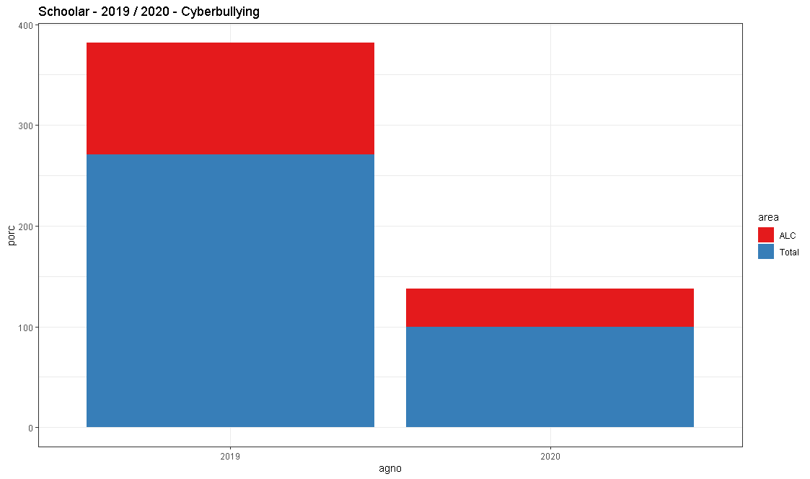
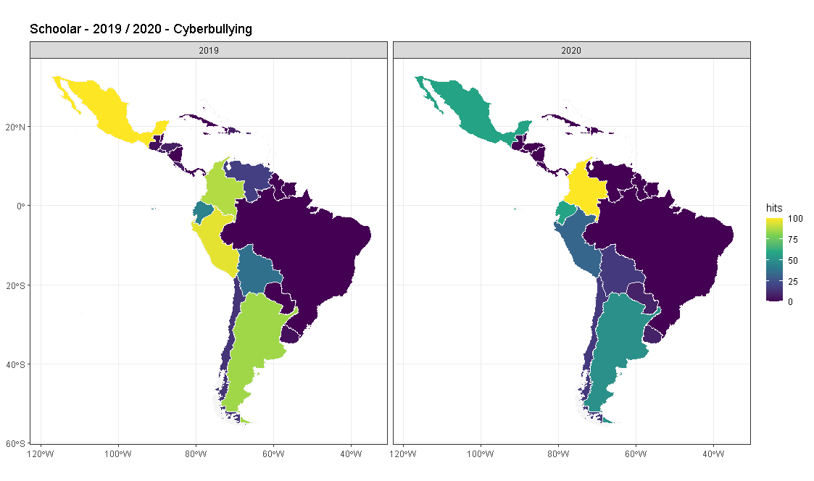

La producción de conocimiento sobre un fenómeno determinado es creciente y dinámico, en este caso, las publicaciones académicas, son un factor relevante al demarcar los antecedentes contextuales respecto a la ‘Violencia Doméstica’ y ‘Cyberbullying’, como términos claves desagregados en: “Ciberacoso”, “Ciberbullying” o “Cyberbullying”, “Sexting”, “Child grooming”, “School bullying”, “Violencia Domestica”, “Violencia contra la mujer” o “Violence Against Women” (Trends).
Es por lo anterior, la búsqueda de los términos señalados, se realizó las siguientes plataformas de investigación científica:
Esta exploración se realizó en torno a preguntas como: ¿Qué contenido es posible encontrar a propósito de las materias mencionadas? ¿La investigación sobre las materias mencionadas se incrementa o decrece en la contingencia actual? ¿Qué énfasis le otorga Entendiendo este apartado, como un espacio para reflexionar sobre la importancia de las publicaciones académicas, las variaciones en la cantidad de publicaciones en cada medio, del conocimiento y también considerar las dificultades que pueden presentarse en el respectivo proceso
La extracción de información para Scielo se encuentra completa, pero la idea es que en este segmento haya una representación gráfica del contenido del Dataframe, así como el correspondiente análisis. En este caso, se dispone de la información completa para darle una estructura al sitio.
El código para recolectar la información de Scielo, se encuentra especificado en el [Anexo | Scielo])(anexo.html#scielo). Por otro lado, a continuación se abre el DataFrame que contiene la información y se ordena de acuerdo a los valores (‘value’).
Observando el siguiente resultado:
## # A tibble: 66 x 5
## pais value agno keyword journal
## <chr> <dbl> <chr> <chr> <chr>
## 1 Brasil 62 19 violence against women SCIELO
## 2 Brasil 46 20 violence against women SCIELO
## 3 Brasil 34 19 domestic violence SCIELO
## 4 Brasil 28 20 domestic violence SCIELO
## 5 Colombia 22 19 violence against women SCIELO
## 6 Salud Pública 22 19 violence against women SCIELO
## 7 Salud Pública 18 20 violence against women SCIELO
## 8 Salud Pública 15 19 domestic violence SCIELO
## 9 Colombia 12 19 domestic violence SCIELO
## 10 Salud Pública 10 20 domestic violence SCIELO
## # ... with 56 more rowsLa extracción de información para Scopus se encuentra completa, en este segmento irá la representación gráfica del contenido del Dataframe, así como el correspondiente análisis. En este caso, se dispone de la información completa para darle una estructura al sitio.
El código para recolectar la información de Scopus, se encuentra especificado en el [Anexo | Scopus])(anexo.html#scopus). Por otro lado, a continuación se abre el DataFrame que contiene la información.
Observando el siguiente resultado:
## # A tibble: 578 x 5
## pais value agno keyword journal
## <chr> <dbl> <chr> <chr> <chr>
## 1 United States 445 19 domestic violence SCOPUS
## 2 United States 302 20 domestic violence SCOPUS
## 3 United Kingdom 159 19 domestic violence SCOPUS
## 4 Australia 131 19 domestic violence SCOPUS
## 5 United States 118 19 cyberbullying SCOPUS
## 6 United States 114 19 grooming SCOPUS
## 7 United Kingdom 106 20 domestic violence SCOPUS
## 8 Australia 99 20 domestic violence SCOPUS
## 9 United States 76 20 grooming SCOPUS
## 10 Canada 74 19 domestic violence SCOPUS
## # ... with 568 more rowsLa extracción de información para Web of Science se encuentra completa, en este segmento irá la representación gráfica del contenido del Dataframe, así como el correspondiente análisis. En este caso, se dispone de la información completa para darle una estructura al sitio.
El código para recolectar la información de Web of Science, se encuentra especificado en el [Anexo | Web of Science])(anexo.html#wos). Por otro lado, a continuación se abre el DataFrame que contiene la información.
Observando el siguiente resultado:
## pais value agno keyword journal
## 11 ISRAEL 16 19 cyberbullying WEBOFSCIENCE
## 312 ENGLAND 16 19 domestic violence WEBOFSCIENCE
## 2 SPAIN 15 19 cyberbullying WEBOFSCIENCE
## 412 AUSTRALIA 15 19 domestic violence WEBOFSCIENCE
## 12 BELGIUM 14 19 cyberbullying WEBOFSCIENCE
## 162 GERMANY 14 19 domestic violence WEBOFSCIENCE
## 172 IRELAND 14 19 domestic violence WEBOFSCIENCE
## 182 NETHERLANDS 14 19 domestic violence WEBOFSCIENCE
## 192 POLAND 14 19 domestic violence WEBOFSCIENCE
## 612 BRAZIL 14 20 domestic violence WEBOFSCIENCE
## 78 CANADA 14 19 violence against women WEBOFSCIENCE
## 88 SOUTH AFRICA 14 19 violence against women WEBOFSCIENCE
## 13 MALAYSIA 13 19 cyberbullying WEBOFSCIENCE
## 14 PORTUGAL 13 19 cyberbullying WEBOFSCIENCE
## 15 TAIWAN 13 19 cyberbullying WEBOFSCIENCE
## 202 COLOMBIA 13 19 domestic violence WEBOFSCIENCE
## 213 FRANCE 13 19 domestic violence WEBOFSCIENCE
## 222 NEW ZEALAND 13 19 domestic violence WEBOFSCIENCE
## 232 NIGERIA 13 19 domestic violence WEBOFSCIENCE
## 242 PEOPLES R CHINA 13 19 domestic violence WEBOFSCIENCE
## 252 PORTUGAL 13 19 domestic violence WEBOFSCIENCE
## 262 SOUTH KOREA 13 19 domestic violence WEBOFSCIENCE
## 272 SWITZERLAND 13 19 domestic violence WEBOFSCIENCE
## 282 WALES 13 19 domestic violence WEBOFSCIENCE
## 73 SPAIN 13 20 domestic violence WEBOFSCIENCE
## 98 MEXICO 13 19 violence against women WEBOFSCIENCE
## 108 TURKEY 13 19 violence against women WEBOFSCIENCE
## 3 USA 12 19 cyberbullying WEBOFSCIENCE
## 61 CANADA 12 20 cyberbullying WEBOFSCIENCE
## 71 ENGLAND 12 20 cyberbullying WEBOFSCIENCE
## 81 SWEDEN 12 20 cyberbullying WEBOFSCIENCE
## 512 CANADA 12 19 domestic violence WEBOFSCIENCE
## 83 NEW ZEALAND 12 20 domestic violence WEBOFSCIENCE
## 93 SWEDEN 12 20 domestic violence WEBOFSCIENCE
## 118 INDIA 12 19 violence against women WEBOFSCIENCE
## 16 CHILE 11 19 cyberbullying WEBOFSCIENCE
## 17 CZECH REPUBLIC 11 19 cyberbullying WEBOFSCIENCE
## 18 HUNGARY 11 19 cyberbullying WEBOFSCIENCE
## 19 INDIA 11 19 cyberbullying WEBOFSCIENCE
## 20 NORWAY 11 19 cyberbullying WEBOFSCIENCE
## 21 POLAND 11 19 cyberbullying WEBOFSCIENCE
## 91 GERMANY 11 20 cyberbullying WEBOFSCIENCE
## 101 TURKEY 11 20 cyberbullying WEBOFSCIENCE
## 292 AUSTRIA 11 19 domestic violence WEBOFSCIENCE
## 302 EGYPT 11 19 domestic violence WEBOFSCIENCE
## 313 ETHIOPIA 11 19 domestic violence WEBOFSCIENCE
## 322 GREECE 11 19 domestic violence WEBOFSCIENCE
## 332 INDONESIA 11 19 domestic violence WEBOFSCIENCE
## 342 MEXICO 11 19 domestic violence WEBOFSCIENCE
## 352 NEPAL 11 19 domestic violence WEBOFSCIENCE
## 362 PAKISTAN 11 19 domestic violence WEBOFSCIENCE
## 372 SERBIA 11 19 domestic violence WEBOFSCIENCE
## 314 AUSTRALIA 11 20 domestic violence WEBOFSCIENCE
## 128 COLOMBIA 11 19 violence against women WEBOFSCIENCE
## 138 ITALY 11 19 violence against women WEBOFSCIENCE
## 22 BRAZIL 10 19 cyberbullying WEBOFSCIENCE
## 23 IRELAND 10 19 cyberbullying WEBOFSCIENCE
## 24 JAPAN 10 19 cyberbullying WEBOFSCIENCE
## 25 LITHUANIA 10 19 cyberbullying WEBOFSCIENCE
## 26 PERU 10 19 cyberbullying WEBOFSCIENCE
## 27 RUSSIA 10 19 cyberbullying WEBOFSCIENCE
## 28 SCOTLAND 10 19 cyberbullying WEBOFSCIENCE
## 29 SLOVAKIA 10 19 cyberbullying WEBOFSCIENCE
## 30 SOUTH KOREA 10 19 cyberbullying WEBOFSCIENCE
## 111 INDIA 10 20 cyberbullying WEBOFSCIENCE
## 121 ITALY 10 20 cyberbullying WEBOFSCIENCE
## 131 MALAYSIA 10 20 cyberbullying WEBOFSCIENCE
## 141 SINGAPORE 10 20 cyberbullying WEBOFSCIENCE
## 151 SOUTH KOREA 10 20 cyberbullying WEBOFSCIENCE
## 610 BRAZIL 10 19 domestic violence WEBOFSCIENCE
## 103 FINLAND 10 20 domestic violence WEBOFSCIENCE
## 113 GERMANY 10 20 domestic violence WEBOFSCIENCE
## 123 NORWAY 10 20 domestic violence WEBOFSCIENCE
## 133 PEOPLES R CHINA 10 20 domestic violence WEBOFSCIENCE
## 518 BELGIUM 10 19 sexting WEBOFSCIENCE
## 616 CANADA 10 19 sexting WEBOFSCIENCE
## 148 GERMANY 10 19 violence against women WEBOFSCIENCE
## 524 CANADA 10 20 violence against women WEBOFSCIENCE
## 4 PEOPLES R CHINA 9 19 cyberbullying WEBOFSCIENCE
## 161 FINLAND 9 20 cyberbullying WEBOFSCIENCE
## 171 ISRAEL 9 20 cyberbullying WEBOFSCIENCE
## 181 TAIWAN 9 20 cyberbullying WEBOFSCIENCE
## 212 USA 9 19 domestic violence WEBOFSCIENCE
## 414 ENGLAND 9 20 domestic violence WEBOFSCIENCE
## 516 INDIA 9 19 grooming WEBOFSCIENCE
## 76 ENGLAND 9 19 sexting WEBOFSCIENCE
## 228 USA 9 19 violence against women WEBOFSCIENCE
## 619 AUSTRALIA 9 20 violence against women WEBOFSCIENCE
## 79 SPAIN 9 20 violence against women WEBOFSCIENCE
## 5 ENGLAND 8 19 cyberbullying WEBOFSCIENCE
## 210 USA 8 20 cyberbullying WEBOFSCIENCE
## 382 BANGLADESH 8 19 domestic violence WEBOFSCIENCE
## 392 GHANA 8 19 domestic violence WEBOFSCIENCE
## 402 LEBANON 8 19 domestic violence WEBOFSCIENCE
## 413 MALAYSIA 8 19 domestic violence WEBOFSCIENCE
## 422 MOZAMBIQUE 8 19 domestic violence WEBOFSCIENCE
## 432 NORTH IRELAND 8 19 domestic violence WEBOFSCIENCE
## 442 SAUDI ARABIA 8 19 domestic violence WEBOFSCIENCE
## 452 SINGAPORE 8 19 domestic violence WEBOFSCIENCE
## 462 SRI LANKA 8 19 domestic violence WEBOFSCIENCE
## 472 THAILAND 8 19 domestic violence WEBOFSCIENCE
## 482 UGANDA 8 19 domestic violence WEBOFSCIENCE
## 492 VIETNAM 8 19 domestic violence WEBOFSCIENCE
## 143 NETHERLANDS 8 20 domestic violence WEBOFSCIENCE
## 153 SOUTH AFRICA 8 20 domestic violence WEBOFSCIENCE
## 163 SWITZERLAND 8 20 domestic violence WEBOFSCIENCE
## 173 TURKEY 8 20 domestic violence WEBOFSCIENCE
## 614 JAPAN 8 19 grooming WEBOFSCIENCE
## 74 RUSSIA 8 19 grooming WEBOFSCIENCE
## 84 SOUTH KOREA 8 19 grooming WEBOFSCIENCE
## 94 SPAIN 8 19 grooming WEBOFSCIENCE
## 318 PEOPLES R CHINA 8 20 grooming WEBOFSCIENCE
## 86 CROATIA 8 19 sexting WEBOFSCIENCE
## 158 CHILE 8 19 violence against women WEBOFSCIENCE
## 168 ETHIOPIA 8 19 violence against women WEBOFSCIENCE
## 178 FRANCE 8 19 violence against women WEBOFSCIENCE
## 187 KENYA 8 19 violence against women WEBOFSCIENCE
## 197 PERU 8 19 violence against women WEBOFSCIENCE
## 207 SERBIA 8 19 violence against women WEBOFSCIENCE
## 2111 SWITZERLAND 8 19 violence against women WEBOFSCIENCE
## 89 SOUTH AFRICA 8 20 violence against women WEBOFSCIENCE
## 31 AUSTRIA 7 19 cyberbullying WEBOFSCIENCE
## 32 COLOMBIA 7 19 cyberbullying WEBOFSCIENCE
## 33 CYPRUS 7 19 cyberbullying WEBOFSCIENCE
## 34 GREECE 7 19 cyberbullying WEBOFSCIENCE
## 35 LUXEMBOURG 7 19 cyberbullying WEBOFSCIENCE
## 36 MEXICO 7 19 cyberbullying WEBOFSCIENCE
## 37 PAKISTAN 7 19 cyberbullying WEBOFSCIENCE
## 38 ROMANIA 7 19 cyberbullying WEBOFSCIENCE
## 39 SAUDI ARABIA 7 19 cyberbullying WEBOFSCIENCE
## 40 SINGAPORE 7 19 cyberbullying WEBOFSCIENCE
## 41 THAILAND 7 19 cyberbullying WEBOFSCIENCE
## 42 WALES 7 19 cyberbullying WEBOFSCIENCE
## 310 SPAIN 7 20 cyberbullying WEBOFSCIENCE
## 72 SWEDEN 7 19 domestic violence WEBOFSCIENCE
## 514 CANADA 7 20 domestic violence WEBOFSCIENCE
## 104 BRAZIL 7 19 grooming WEBOFSCIENCE
## 114 CANADA 7 19 grooming WEBOFSCIENCE
## 124 FRANCE 7 19 grooming WEBOFSCIENCE
## 134 PAKISTAN 7 19 grooming WEBOFSCIENCE
## 144 TAIWAN 7 19 grooming WEBOFSCIENCE
## 417 CANADA 7 20 grooming WEBOFSCIENCE
## 517 ENGLAND 7 20 grooming WEBOFSCIENCE
## 96 BOSNIA HERCEG 7 19 sexting WEBOFSCIENCE
## 106 ECUADOR 7 19 sexting WEBOFSCIENCE
## 116 SCOTLAND 7 19 sexting WEBOFSCIENCE
## 320 SPAIN 7 20 sexting WEBOFSCIENCE
## 325 BRAZIL 7 19 violence against women WEBOFSCIENCE
## 99 ITALY 7 20 violence against women WEBOFSCIENCE
## 109 NETHERLANDS 7 20 violence against women WEBOFSCIENCE
## 119 TURKEY 7 20 violence against women WEBOFSCIENCE
## 6 AUSTRALIA 6 19 cyberbullying WEBOFSCIENCE
## 191 CZECH REPUBLIC 6 20 cyberbullying WEBOFSCIENCE
## 201 HUNGARY 6 20 cyberbullying WEBOFSCIENCE
## 211 IRAN 6 20 cyberbullying WEBOFSCIENCE
## 221 IRELAND 6 20 cyberbullying WEBOFSCIENCE
## 231 NETHERLANDS 6 20 cyberbullying WEBOFSCIENCE
## 241 NORWAY 6 20 cyberbullying WEBOFSCIENCE
## 251 SCOTLAND 6 20 cyberbullying WEBOFSCIENCE
## 82 INDIA 6 19 domestic violence WEBOFSCIENCE
## 183 AUSTRIA 6 20 domestic violence WEBOFSCIENCE
## 193 FRANCE 6 20 domestic violence WEBOFSCIENCE
## 203 IRAN 6 20 domestic violence WEBOFSCIENCE
## 215 ISRAEL 6 20 domestic violence WEBOFSCIENCE
## 223 ITALY 6 20 domestic violence WEBOFSCIENCE
## 233 MEXICO 6 20 domestic violence WEBOFSCIENCE
## 243 NORTH IRELAND 6 20 domestic violence WEBOFSCIENCE
## 253 PAKISTAN 6 20 domestic violence WEBOFSCIENCE
## 263 SOUTH KOREA 6 20 domestic violence WEBOFSCIENCE
## 273 THAILAND 6 20 domestic violence WEBOFSCIENCE
## 216 USA 6 19 grooming WEBOFSCIENCE
## 615 GERMANY 6 20 grooming WEBOFSCIENCE
## 75 INDIA 6 20 grooming WEBOFSCIENCE
## 85 JAPAN 6 20 grooming WEBOFSCIENCE
## 95 SPAIN 6 20 grooming WEBOFSCIENCE
## 126 GERMANY 6 19 sexting WEBOFSCIENCE
## 136 IRAN 6 19 sexting WEBOFSCIENCE
## 146 ITALY 6 19 sexting WEBOFSCIENCE
## 419 AUSTRALIA 6 20 sexting WEBOFSCIENCE
## 519 ENGLAND 6 20 sexting WEBOFSCIENCE
## 420 SPAIN 6 19 violence against women WEBOFSCIENCE
## 230 USA 6 20 violence against women WEBOFSCIENCE
## 7 CANADA 5 19 cyberbullying WEBOFSCIENCE
## 8 TURKEY 5 19 cyberbullying WEBOFSCIENCE
## 261 BRAZIL 5 20 cyberbullying WEBOFSCIENCE
## 271 CHILE 5 20 cyberbullying WEBOFSCIENCE
## 281 ECUADOR 5 20 cyberbullying WEBOFSCIENCE
## 291 JAPAN 5 20 cyberbullying WEBOFSCIENCE
## 301 NIGERIA 5 20 cyberbullying WEBOFSCIENCE
## 311 POLAND 5 20 cyberbullying WEBOFSCIENCE
## 321 PORTUGAL 5 20 cyberbullying WEBOFSCIENCE
## 331 RUSSIA 5 20 cyberbullying WEBOFSCIENCE
## 341 SAUDI ARABIA 5 20 cyberbullying WEBOFSCIENCE
## 351 SOUTH AFRICA 5 20 cyberbullying WEBOFSCIENCE
## 361 SWITZERLAND 5 20 cyberbullying WEBOFSCIENCE
## 371 VIETNAM 5 20 cyberbullying WEBOFSCIENCE
## 92 IRAN 5 19 domestic violence WEBOFSCIENCE
## 102 SCOTLAND 5 19 domestic violence WEBOFSCIENCE
## 112 TURKEY 5 19 domestic violence WEBOFSCIENCE
## 283 DENMARK 5 20 domestic violence WEBOFSCIENCE
## [ reached 'max' / getOption("max.print") -- omitted 238 rows ]La extracción de información para Scholar se encuentra completa, en este segmento irá la representación gráfica del contenido del Dataframe, así como el correspondiente análisis. En este caso, se dispone de la información completa para darle una estructura al sitio.
El código para recolectar la información de Scholar, se encuentra especificado en el [Anexo | Scholar])(anexo.html#scholar). Por otro lado, a continuación se abre el DataFrame que contiene la información.
Observando el siguiente resultado:
## pais value agno keyword journal
## 651 Mexico 24300 2019 Violence Against Women GOOGLESCHOLAR
## 832 Méjico 19000 2019 Violencia contra la mujer GOOGLESCHOLAR
## 487 Brazil 17500 2019 Violence Against Women GOOGLESCHOLAR
## 776 Brasil 17500 2019 Violence Against Women GOOGLESCHOLAR
## 521 Colombia 16100 2019 Violencia contra la mujer GOOGLESCHOLAR
## 455 Argentina 15700 2019 Violencia contra la mujer GOOGLESCHOLAR
## 650 Mexico 14500 2019 Violencia contra la mujer GOOGLESCHOLAR
## 512 Chile 13800 2019 Violencia contra la mujer GOOGLESCHOLAR
## 200 Mexico 13100 2020 Violence Against Women GOOGLESCHOLAR
## 677 Peru 12000 2019 Violencia contra la mujer GOOGLESCHOLAR
## 841 Perú 12000 2019 Violencia contra la mujer GOOGLESCHOLAR
## 522 Colombia 11000 2019 Violence Against Women GOOGLESCHOLAR
## 456 Argentina 10800 2019 Violence Against Women GOOGLESCHOLAR
## 513 Chile 9520 2019 Violence Against Women GOOGLESCHOLAR
## 486 Brazil 9350 2019 Violencia contra la mujer GOOGLESCHOLAR
## 566 Ecuador 9310 2019 Violencia contra la mujer GOOGLESCHOLAR
## 327 Brasil 9150 2020 Violence Against Women GOOGLESCHOLAR
## 775 Brasil 9010 2019 Violencia contra la mujer GOOGLESCHOLAR
## 50 Brazil 8940 2020 Violence Against Women GOOGLESCHOLAR
## 713 El Salvador 8180 2019 Violence Against Women GOOGLESCHOLAR
## 540 Cuba 8150 2019 Violence Against Women GOOGLESCHOLAR
## 678 Peru 8150 2019 Violence Against Women GOOGLESCHOLAR
## 842 Perú 8150 2019 Violence Against Women GOOGLESCHOLAR
## 712 El Salvador 7570 2019 Violencia contra la mujer GOOGLESCHOLAR
## 379 Méjico 7010 2020 Violencia contra la mujer GOOGLESCHOLAR
## 530 Costa Rica 6950 2019 Violencia contra la mujer GOOGLESCHOLAR
## 539 Cuba 6820 2019 Violencia contra la mujer GOOGLESCHOLAR
## 831 Méjico 6810 2019 Violencia Domestica GOOGLESCHOLAR
## 649 Mexico 6800 2019 Violencia Domestica GOOGLESCHOLAR
## 583 Guatemala 6660 2019 Violence Against Women GOOGLESCHOLAR
## 687 Puerto Rico 5910 2019 Violence Against Women GOOGLESCHOLAR
## 199 Mexico 5740 2020 Violencia contra la mujer GOOGLESCHOLAR
## 430 Colombia 5450 2020 Violence Against Women GOOGLESCHOLAR
## 520 Colombia 5450 2019 Violencia Domestica GOOGLESCHOLAR
## 811 Haití 5450 2019 Violence Against Women GOOGLESCHOLAR
## 454 Argentina 5440 2019 Violencia Domestica GOOGLESCHOLAR
## 477 Bolivia 5370 2019 Violencia contra la mujer GOOGLESCHOLAR
## 485 Brazil 5350 2019 Violencia Domestica GOOGLESCHOLAR
## 15 Argentina 5290 2020 Violence Against Women GOOGLESCHOLAR
## 751 Venezuela 5290 2019 Violence Against Women GOOGLESCHOLAR
## 610 Haiti 5260 2019 Violence Against Women GOOGLESCHOLAR
## 14 Argentina 5110 2020 Violencia contra la mujer GOOGLESCHOLAR
## 774 Brasil 5060 2019 Violencia Domestica GOOGLESCHOLAR
## 735 Uruguay 5000 2019 Violencia contra la mujer GOOGLESCHOLAR
## 567 Ecuador 4940 2019 Violence Against Women GOOGLESCHOLAR
## 767 Virgin Islands US 4940 2019 Violence Against Women GOOGLESCHOLAR
## 619 Jamaica 4900 2019 Violence Against Women GOOGLESCHOLAR
## 478 Bolivia 4850 2019 Violence Against Women GOOGLESCHOLAR
## 429 Colombia 4830 2020 Violencia contra la mujer GOOGLESCHOLAR
## 511 Chile 4810 2019 Violencia Domestica GOOGLESCHOLAR
## 801 Granada 4770 2019 Violencia contra la mujer GOOGLESCHOLAR
## 582 Guatemala 4740 2019 Violencia contra la mujer GOOGLESCHOLAR
## 421 Chile 4680 2020 Violence Against Women GOOGLESCHOLAR
## 648 Mexico 4570 2019 School bullying GOOGLESCHOLAR
## 660 Nicaragua 4540 2019 Violence Against Women GOOGLESCHOLAR
## 686 Puerto Rico 4510 2019 Violencia contra la mujer GOOGLESCHOLAR
## 529 Costa Rica 4440 2019 Violencia Domestica GOOGLESCHOLAR
## 227 Peru 4410 2020 Violence Against Women GOOGLESCHOLAR
## 389 Perú 4280 2020 Violence Against Women GOOGLESCHOLAR
## 420 Chile 4260 2020 Violencia contra la mujer GOOGLESCHOLAR
## 676 Peru 4260 2019 Violencia Domestica GOOGLESCHOLAR
## 840 Perú 4260 2019 Violencia Domestica GOOGLESCHOLAR
## 824 Santa Lucía 4220 2019 Violence Against Women GOOGLESCHOLAR
## 531 Costa Rica 4210 2019 Violence Against Women GOOGLESCHOLAR
## 669 Panamá 4160 2019 Violence Against Women GOOGLESCHOLAR
## 263 El Salvador 4030 2020 Violence Against Women GOOGLESCHOLAR
## 759 British Virgin Islands 4010 2019 Violence Against Women GOOGLESCHOLAR
## 89 Cuba 3960 2020 Violence Against Women GOOGLESCHOLAR
## 601 Honduras 3900 2019 Violence Against Women GOOGLESCHOLAR
## 642 Saint Lucia 3860 2019 Violence Against Women GOOGLESCHOLAR
## 558 Dominican Republic 3730 2019 Violence Against Women GOOGLESCHOLAR
## 388 Perú 3700 2020 Violencia contra la mujer GOOGLESCHOLAR
## 226 Peru 3610 2020 Violencia contra la mujer GOOGLESCHOLAR
## 133 Guatemala 3470 2020 Violence Against Women GOOGLESCHOLAR
## 326 Brasil 3440 2020 Violencia contra la mujer GOOGLESCHOLAR
## 736 Uruguay 3430 2019 Violence Against Women GOOGLESCHOLAR
## 49 Brazil 3400 2020 Violencia contra la mujer GOOGLESCHOLAR
## 823 Santa Lucía 3330 2019 Violencia contra la mujer GOOGLESCHOLAR
## 565 Ecuador 3310 2019 Violencia Domestica GOOGLESCHOLAR
## 236 Puerto Rico 3170 2020 Violence Against Women GOOGLESCHOLAR
## 538 Cuba 3160 2019 Violencia Domestica GOOGLESCHOLAR
## 659 Nicaragua 3070 2019 Violencia contra la mujer GOOGLESCHOLAR
## 668 Panamá 3050 2019 Violencia contra la mujer GOOGLESCHOLAR
## 484 Brazil 3010 2019 School bullying GOOGLESCHOLAR
## 711 El Salvador 3010 2019 Violencia Domestica GOOGLESCHOLAR
## 362 Haití 2990 2020 Violence Against Women GOOGLESCHOLAR
## 160 Haiti 2910 2020 Violence Against Women GOOGLESCHOLAR
## 302 Venezuela 2830 2020 Violence Against Women GOOGLESCHOLAR
## 695 Paraguay 2750 2019 Violencia contra la mujer GOOGLESCHOLAR
## 114 Ecuador 2740 2020 Violencia contra la mujer GOOGLESCHOLAR
## 262 El Salvador 2600 2020 Violencia contra la mujer GOOGLESCHOLAR
## 198 Mexico 2550 2020 Violencia Domestica GOOGLESCHOLAR
## 378 Méjico 2550 2020 Violencia Domestica GOOGLESCHOLAR
## 600 Honduras 2550 2019 Violencia contra la mujer GOOGLESCHOLAR
## 773 Brasil 2540 2019 School bullying GOOGLESCHOLAR
## 41 Bolivia 2520 2020 Violence Against Women GOOGLESCHOLAR
## 88 Cuba 2520 2020 Violencia contra la mujer GOOGLESCHOLAR
## 197 Mexico 2420 2020 School bullying GOOGLESCHOLAR
## 519 Colombia 2420 2019 School bullying GOOGLESCHOLAR
## 115 Ecuador 2390 2020 Violence Against Women GOOGLESCHOLAR
## 750 Venezuela 2380 2019 Violencia Domestica GOOGLESCHOLAR
## 318 Virgin Islands US 2300 2020 Violence Against Women GOOGLESCHOLAR
## 169 Jamaica 2270 2020 Violence Against Women GOOGLESCHOLAR
## 209 Nicaragua 2240 2020 Violence Against Women GOOGLESCHOLAR
## 696 Paraguay 2240 2019 Violence Against Women GOOGLESCHOLAR
## 375 Santa Lucía 2210 2020 Violence Against Women GOOGLESCHOLAR
## 438 Costa Rica 2170 2020 Violencia contra la mujer GOOGLESCHOLAR
## 548 Dominica 2140 2019 Violencia contra la mujer GOOGLESCHOLAR
## 510 Chile 2110 2019 School bullying GOOGLESCHOLAR
## 581 Guatemala 2080 2019 Violencia Domestica GOOGLESCHOLAR
## 106 Dominican Republic 2070 2020 Violence Against Women GOOGLESCHOLAR
## 218 Panamá 2050 2020 Violence Against Women GOOGLESCHOLAR
## 151 Honduras 2040 2020 Violence Against Women GOOGLESCHOLAR
## 453 Argentina 2040 2019 School bullying GOOGLESCHOLAR
## 802 Granada 2030 2019 Violence Against Women GOOGLESCHOLAR
## 191 Saint Lucia 2020 2020 Violence Against Women GOOGLESCHOLAR
## 476 Bolivia 2020 2019 Violencia Domestica GOOGLESCHOLAR
## 792 República Dominicana 2000 2019 Violencia contra la mujer GOOGLESCHOLAR
## 822 Santa Lucía 1990 2019 Violencia Domestica GOOGLESCHOLAR
## 301 Venezuela 1980 2020 Violencia contra la mujer GOOGLESCHOLAR
## 439 Costa Rica 1940 2020 Violence Against Women GOOGLESCHOLAR
## 734 Uruguay 1910 2019 Violencia Domestica GOOGLESCHOLAR
## 325 Brasil 1870 2020 Violencia Domestica GOOGLESCHOLAR
## 13 Argentina 1860 2020 Violencia Domestica GOOGLESCHOLAR
## 428 Colombia 1840 2020 Violencia Domestica GOOGLESCHOLAR
## 675 Peru 1830 2019 School bullying GOOGLESCHOLAR
## 839 Perú 1830 2019 School bullying GOOGLESCHOLAR
## 48 Brazil 1810 2020 Violencia Domestica GOOGLESCHOLAR
## 235 Puerto Rico 1810 2020 Violencia contra la mujer GOOGLESCHOLAR
## 40 Bolivia 1790 2020 Violencia contra la mujer GOOGLESCHOLAR
## 352 Granada 1780 2020 Violencia contra la mujer GOOGLESCHOLAR
## 310 British Virgin Islands 1760 2020 Violence Against Women GOOGLESCHOLAR
## 287 Uruguay 1740 2020 Violence Against Women GOOGLESCHOLAR
## 47 Brazil 1720 2020 School bullying GOOGLESCHOLAR
## 800 Granada 1610 2019 Violencia Domestica GOOGLESCHOLAR
## 286 Uruguay 1580 2020 Violencia contra la mujer GOOGLESCHOLAR
## 496 Bahamas 1480 2019 Violence Against Women GOOGLESCHOLAR
## 419 Chile 1470 2020 Violencia Domestica GOOGLESCHOLAR
## 132 Guatemala 1450 2020 Violencia contra la mujer GOOGLESCHOLAR
## 667 Panamá 1450 2019 Violencia Domestica GOOGLESCHOLAR
## 592 Guyana 1430 2019 Violence Against Women GOOGLESCHOLAR
## 710 El Salvador 1430 2019 School bullying GOOGLESCHOLAR
## 437 Costa Rica 1410 2020 Violencia Domestica GOOGLESCHOLAR
## 469 Barbados 1390 2019 Violence Against Women GOOGLESCHOLAR
## 609 Haiti 1390 2019 Violencia contra la mujer GOOGLESCHOLAR
## 810 Haití 1390 2019 Violencia contra la mujer GOOGLESCHOLAR
## 225 Peru 1330 2020 Violencia Domestica GOOGLESCHOLAR
## 387 Perú 1330 2020 Violencia Domestica GOOGLESCHOLAR
## 599 Honduras 1280 2019 Violencia Domestica GOOGLESCHOLAR
## 374 Santa Lucía 1210 2020 Violencia contra la mujer GOOGLESCHOLAR
## 658 Nicaragua 1210 2019 Violencia Domestica GOOGLESCHOLAR
## 694 Paraguay 1210 2019 Violencia Domestica GOOGLESCHOLAR
## 727 Trinidad Tobago 1190 2019 Violence Against Women GOOGLESCHOLAR
## 861 Trinidad y Tobago 1190 2019 Violence Against Women GOOGLESCHOLAR
## 564 Ecuador 1180 2019 School bullying GOOGLESCHOLAR
## 645 Mexico 1130 2019 Cyberbullying GOOGLESCHOLAR
## 353 Granada 1110 2020 Violence Against Women GOOGLESCHOLAR
## 704 Suriname 1090 2019 Violence Against Women GOOGLESCHOLAR
## 547 Dominica 1070 2019 Violencia Domestica GOOGLESCHOLAR
## 217 Panamá 1060 2020 Violencia contra la mujer GOOGLESCHOLAR
## 113 Ecuador 1050 2020 Violencia Domestica GOOGLESCHOLAR
## 791 República Dominicana 1050 2019 Violencia Domestica GOOGLESCHOLAR
## 261 El Salvador 1040 2020 Violencia Domestica GOOGLESCHOLAR
## 245 Paraguay 1030 2020 Violence Against Women GOOGLESCHOLAR
## 427 Colombia 1030 2020 School bullying GOOGLESCHOLAR
## 608 Haiti 1030 2019 Violencia Domestica GOOGLESCHOLAR
## 809 Haití 1030 2019 Violencia Domestica GOOGLESCHOLAR
## 504 Belize 1010 2019 Violence Against Women GOOGLESCHOLAR
## 549 Dominica 977 2019 Violence Against Women GOOGLESCHOLAR
## 537 Cuba 975 2019 School bullying GOOGLESCHOLAR
## 684 Puerto Rico 967 2019 School bullying GOOGLESCHOLAR
## 87 Cuba 959 2020 Violencia Domestica GOOGLESCHOLAR
## 618 Jamaica 936 2019 Violencia contra la mujer GOOGLESCHOLAR
## 244 Paraguay 934 2020 Violencia contra la mujer GOOGLESCHOLAR
## 324 Brasil 934 2020 School bullying GOOGLESCHOLAR
## 208 Nicaragua 919 2020 Violencia contra la mujer GOOGLESCHOLAR
## 528 Costa Rica 918 2019 School bullying GOOGLESCHOLAR
## 685 Puerto Rico 911 2019 Violencia Domestica GOOGLESCHOLAR
## 418 Chile 885 2020 School bullying GOOGLESCHOLAR
## 749 Venezuela 872 2019 School bullying GOOGLESCHOLAR
## 647 Mexico 863 2019 Child grooming GOOGLESCHOLAR
## 574 Grenada 844 2019 Violence Against Women GOOGLESCHOLAR
## 770 Brasil 826 2019 Cyberbullying GOOGLESCHOLAR
## 580 Guatemala 811 2019 School bullying GOOGLESCHOLAR
## 150 Honduras 798 2020 Violencia contra la mujer GOOGLESCHOLAR
## 142 Guyana 795 2020 Violence Against Women GOOGLESCHOLAR
## 300 Venezuela 790 2020 Violencia Domestica GOOGLESCHOLAR
## 821 Santa Lucía 784 2019 School bullying GOOGLESCHOLAR
## 224 Peru 773 2020 School bullying GOOGLESCHOLAR
## 386 Perú 773 2020 School bullying GOOGLESCHOLAR
## 12 Argentina 767 2020 School bullying GOOGLESCHOLAR
## 97 Dominica 759 2020 Violencia contra la mujer GOOGLESCHOLAR
## 373 Santa Lucía 739 2020 Violencia Domestica GOOGLESCHOLAR
## 131 Guatemala 724 2020 Violencia Domestica GOOGLESCHOLAR
## 343 República Dominicana 697 2020 Violencia contra la mujer GOOGLESCHOLAR
## 878 Islas Vígenes Norteamericanas 686 2019 Violencia Domestica GOOGLESCHOLAR
## 39 Bolivia 678 2020 Violencia Domestica GOOGLESCHOLAR
## 32 Barbados 642 2020 Violence Against Women GOOGLESCHOLAR
## 278 Trinidad Tobago 634 2020 Violence Against Women GOOGLESCHOLAR
## 406 Trinidad y Tobago 634 2020 Violence Against Women GOOGLESCHOLAR
## [ reached 'max' / getOption("max.print") -- omitted 680 rows ]En la región se observa un decrecimiento de investigaciones sobre el cyberbullying o ciberacoso entre los años 2019 y 2020, siendo ese decrecimiento proporcional a la cantidad de estudios revisados por cada año:
ggplot(data=data_graf,aes(x=agno,fill=area)) +
geom_bar(aes(y=porc),
stat='identity', position="stack")+
scale_fill_brewer(palette="Set1")+
theme_bw()+
labs(title = "Schoolar - 2019 / 2020 - Cyberbullying")
Por otro lado al revisar por país los estudios provenientes de Colombia, han aumentado, a diferencia de México que en proporción han disminuido en la misma fecha.
geo_school=ggplot() +
geom_sf(data = map_plot,aes(fill = hits),color = "whitesmoke",size=0) +
scale_fill_viridis_c()+
theme_bw()+
facet_grid(~ agno) +
labs(title = "Schoolar - 2019 / 2020 - Cyberbullying")
plot(geo_school)